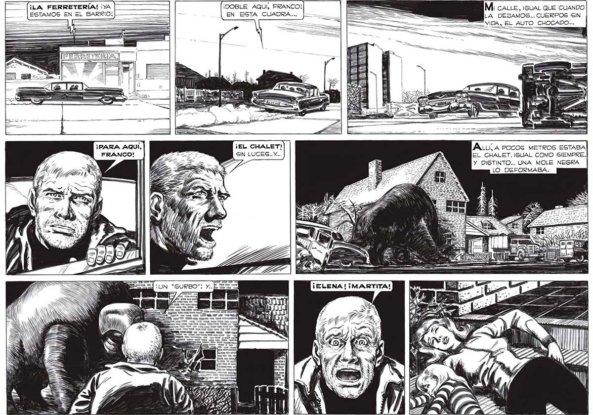

302 » A RES ¡LA FERRETERÍA! ¡YA | 7 ESTAMOS EN EL BARRIO: [EAS ¡PARA AQUÍ, | FRANCO! Ñ SS SN S AN S ¡DOBLE AQUÍ, FRANCO! EN ESTA CUADRA... nn A MY Mi caLie, ¡isuAL QUE CUANDO LA DEJAMOS... CUERPOS SIN VIDA, EL AUTO CHOGADO... O ALLA POCos METROS ESTABA EL CHALET. IGUAL COMO SIEMPRE. Y DISTINTO... UNA MOLE NEGRA LO DEFORMABA.
